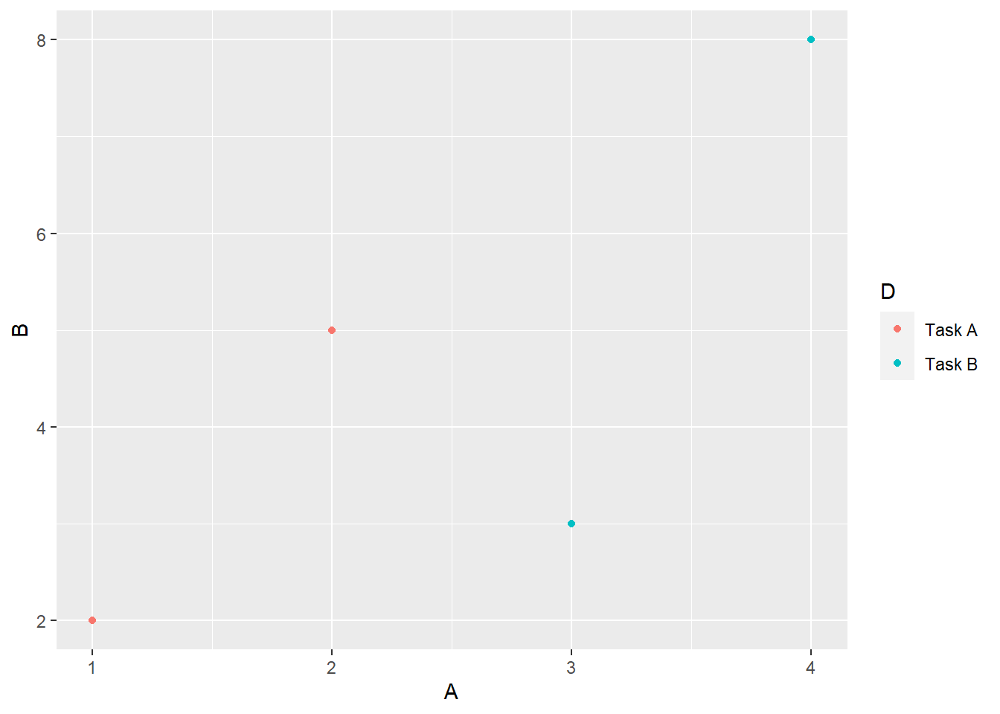
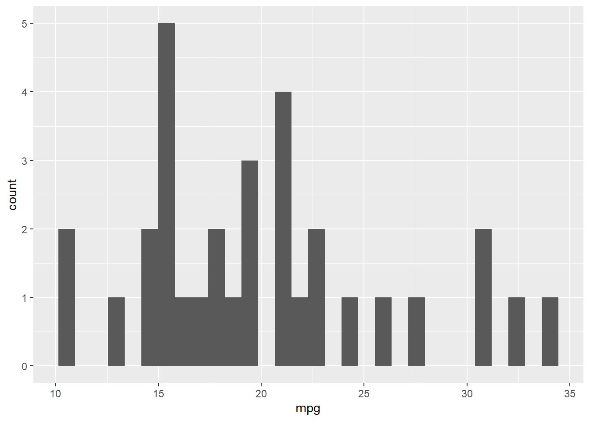

library(dplyr)
library(ggplot2)Visualizing Data: {ggplot} and the grammar of graphics
Readings and Preparation
Before Class: First, read to familiarize yourself with the concepts rather than master them. Understand why one would want to visualize data in a particular way and also understand some of the functionality of {ggplot2}. I will assume that you attend class with some level of basic understanding of concepts and working of functions. The goal of reading should be to understand and implement code functions as well as support your understanding and help your troubleshooting of problems. This cannot happen if you just read the content without interacting with it, however reading is absolutely essential to being successful during class time.
Class: In class, some functions and concepts will be introduced and we will practice implementing code through exercises.
Supplemental Readings
Libraries
- {here}: 1.0.1: for path management
- {dplyr}: 1.1.4: for selecting, filtering, and mutating
- {ggplot2}: 3.4.4: for plotting
Load libraries
External Functions
Provided in class:
view_html(): for viewing data frames in html format, from /r/my_functions.R
If saved, source locally:
source(here::here("r", "my_functions.R"))Or Source online:
source("https://raw.githubusercontent.com/slicesofdata/fods24/main/r/functions/view_html.R")The Grammar of Graphics
Data visualization is key to understanding data. The major plotting workhorse in R is {ggplot2}, which is built on Leland Wilkinson’s (2005) text on what he called The Grammar of Graphics]. You can find out more about the motivation for him developing his approach here.
Wilkinson’s approach to creating plots layer-by-layer is implemented in the {ggplot2}(https://ggplot2.tidyverse.org/) library, which was written by Hadley Wickham and is explained in more detail in Elegant Graphics for Data Analysis.
The data visualizations we will create for this course will be created natively using {ggplot2} or by using libraries but upon it. Thus, but using the library, you will learn this layered approach outlined by Wilkinson and build layers of plot elements to create the final rendered visualization.
{ggplot} Plot Basics
All plots using {ggplot2} start with a base foundation, on top which layers are added according to their own aesthetic attributes.
As the authors point out in Elegant Graphics for Data Analysis, that the original Grammar of Graphics put forth by Wilkinson and later on the layered grammar of graphics, a statistical graphic represents a mapping from data to aesthetic attributes (e.g., color, size, shape, etc.) of geometric objects (e.g., points, lines, bars, etc.) plotted on a specific coordinate system (e.g., Cartesian, Polar). Plots may include statistical information or text. Faceting methods can be used to produce the same plots for different subsets of data (e.g., variations in another variable). All of these individual components ultimately create the final graphic.
Applying a set of rules, or a grammar, allows for creating plot of all different types. Just like understanding a language grammar allows you to create new sentences that have never been spoken before, knowing the grammar of graphics allows you to create plots that have not been created before. Without a grammar, you may be limited to choose a sentence structure from a database that matches most closely to what you want to say. Unfortunately, there may not be an appropriate sentence in that database to capture what you would like to communicate. Similarly, if you are programming visualizations, you may be limited need to use a function (like a sentence) that someone has written to plot some data even if the plot is not what you really want to create to facilitate telling your story. A grammar will free you of these limitations. That’s where {ggplot} comes in. All plots will follow a set of rules but applying the rules in different ways allows you to create unique visualizations that may have never been seen before.
Note: Using a grammar needs to be correct even if the sentence is nonsensical. If you do not follow the grammar, {ggplot2} will not understand you and will return no plot or something that does not make sense.
Example: An XY Scatterplot
Here is an example of a scatterplot communicating the relationship between mpg and cyl (cylinder size) from the mtcars data set. The plot uses two data frames, one of which summarizes the mpg means for each cyl level. Yes, you can use two data frames in the same plot.
{ggplot} Plot Composition
There are five mapping components:
- Layer containing geometric elements and statistical transformations:
- Data a tidy data frame, most typically in long/narrow format
- Mapping defining how vector variables are visualized (e.g., aesthetics like shape, color, position, hue, etc.)
- Statistical Transformation (stat) representing some summarizing of data (e.g., sums, fitted curves, etc.)
- Geometric object (geom) controlling the type of visualization
- Position Adjustment (position) controlling where visual elements are positioned
Scales that map values in the data space to values in aesthetic space
A Coordinate System for mapping coordinates to the plane of a graphic
A Facet for arranging the data into a grid; plotting subsets of data
A Theme controlling the niceties of the plot, like font, background, grids, axes, typeface etc.
The grammar does not:
- Make suggestions about what graphics to use
- Describe interactivity with a graphic; {ggplot2} graphics are static images, though they can be animated
Some Helpful Functions
ggplot(): for initializing a plot objectaes(): for specifying aesthetics of a plot (e.g., x, y, size, color, etc.)geom_bar(): for bar geometry of a plot using either x or ygeom_col(): for bar geometry of a plot using x and ygeom_point(): for point geometry of a plotgeom_line(): for line geometry of a plotgeom_histogram(): for a distribution geometry of a plotggtitle()orlabs(): for adding a titlegeom_text(): for editing textylab()andxlab(): for axis labelingcoord_flip(): for flipping the x and y coordinates
theme_minimal(): a particular theme applicationtheme_set(): for setting a theme
Let’s Make a Plot
Let’s walk through the steps for making a plot using {ggplot2}. We will see what happens when we create a plot by accepting the function defaults and later address making modifications.
Initializing the Plot Object
What is a ?ggplot object? Review the docs first. Let’s apply the base layer using ggplot(). This function takes a data set and simply initializes the plot object so that you can build other components on top of it. By default, data = NULL so, you will need to pass some data argument. There is also a mapping parameter for mapping the aesthetics of the plot, by default, mapping = aes(). If you don’t pass a data frame to data, what happens?
ggplot(data = NULL,
mapping = aes()
)Parameters/Arguments:
data: Default data set to use for plot. If not already a data.frame, will be converted to one by fortify(). If not specified, must be supplied in each layer added to the plot.mapping: Default list of aesthetic mappings to use for plot. If not specified, must be supplied in each layer added to the plot.
ggplot()
An object is created but it contains no data. The default is some rectangle in space.
Passing the Data to ggplot()
You cannot have a plot without data, so we need some data in a tidy format. We can read in a data set or create one.
DATA <- data.frame(
A = c(1, 2, 3, 4),
B = c(2, 5, 3, 8),
C = c(10, 15, 32, 28),
D = c("Task A", "Task A", "Task B", "Task B"),
E = c("circle", "circle", "square", "square")
)Now we can pass data = DATA to ggplot():
ggplot(data = DATA)
Or we can pipe the data to ggplot().
DATA |>
ggplot()
OK, so still nothing. That’s because we haven’t told ggplot what visual properties or aesthetics to include. Importantly, we don’t have do this in a base layer. If we set data = DATA, the subsequent layers will inherit that data frame if you don’t pass the argument in a different layer. However, you are not limited to passing only one data set. You might wish to plot the aesthetics of one data frame in one layer and then add another layer of aesthetics taken from a different data frame. TLDR; you can pass data or not in the initialization of the base layer.
Scaling/Scale Transformation
DATA A B C D E
1 1 2 10 Task A circle
2 2 5 15 Task A circle
3 3 3 32 Task B square
4 4 8 28 Task B squareLooking at the data, we have columns and rows. Looking at the data frame, you see the ‘identity’ of each case. Ease case is a numeric value, character, or factor. What you for each is there identity. Of course, we can change their identity in some way by transforming the values to z scores, log values, or each average them together to take their count and then plot those data. But those are not their true identity.
In order to take the data units in the data frame so that they can be represented as physical units on a plot (e.g., points, bars, lines, etc.), there needs to be some scaling transformation. The plot needs to understand how many pixels high and wide to create a plot and the plot needs to know the limits of the axes for example. Similarly, it needs to know what shapes to present, how many, etc. By default, the statistical transformation is an ‘identity’ transformation, of one that just takes the values and plots them as their appear in the data (their identity).
Choosing a Coordinate System
All we have now is the base layer taking on some coordinates. For example, where are the points plotted on the plot? The system can follow the Cartesian coordinate system or a Polar coordinate system. An example of this will follow later. For now, the default is chosen for you.
Adding Aesthetic Mappings
If you wanted a plot geometry to inherit properties of the initialized base layer, you could pass aesthetics to the mapping argument, mapping = aes().
DATA |>
ggplot(mapping = aes())But this doesn’t do anything because we haven’t added information to pass to the aesthetics in aes(). Looking at ?aes, we see that aes() maps how properties of the data connect to or map onto with the features of the graph (e.g., axis position, color, size, etc.). The aesthetics are the visual properties of the plots, so they are essential to map by passing arguments to aes(). But how many and what variables do we reference? Looking at ?aes, you see that x and y are needed.
Because we passed data = DATA in ggplot(), we can reference the variables by their column names without specifying the data frame. Choosing x = A and y = B will
DATA |>
ggplot(mapping = aes(x = A,
y = B)
)We can see that the aesthetic layer now applied to the plot scales the data to present A along the x-axis with a range from lowest to highest value from that vector. Similarly, the mapping presents B along the y-axis with a range from lowest to highest value in the vector. Also, the aesthetics include the variable name as a the label for the x and y axes. Of course, these could be changed in a layer as well. More on that later.
You might have been tempted to pass the variable names a quoted strings (e.g., “A” and “B) but if you do that, you’ll get something different.
DATA |>
ggplot(mapping = aes(x = "A",
y = "B")
)If we want to plot the data as they are in the data frame, we would apply the ‘identity’ transformation. By identity, we just need to instruct ggplot() to use the data values in the data set. If you wanted to plot the means, frequency count, or something else, we would need to tell ggplot() how to transform the data.
Adding Plot Geometries
We don’t yet have any geometries, or geoms, added. Geoms can take many forms, including, points, lines, bars, text, etc. If we want the values in A and B to be plotted as x and y coordinates representing points on the plot, we can add a point geometry using geom_point().
DATA |>
ggplot(mapping = aes(x = A,
y = B
)
) +
geom_point()
The points geometry has now been applied, which takes the aesthetic mapping and makes them into points.
But geometries also have aesthetics, or visual properties so for each geom, you can pass arguments to aes(). For example, the xy points have to take some shape, color, and size in order for them to be visible. By default, these have been determined or otherwise you wouldn’t see black circles of any size.
Checking ?geom_point, you will see at the bottom of the arguments section, that by default inherit.aes = TRUE, which means the aesthetic mappings in geom_point() will be inherited by default. Similarly, data = NULL so the data and the aesthetic mapping from ggplot() don’t need to be specified as data = DATA and mapping = aes(x = A, y = B), unless of course we wanted to overwrite them. Though not inherited, other aesthetics have defaults for geom_point(). If we wanted to be verbose, we could include all of them and see how this plot compares with that above.
DATA |>
ggplot(mapping = aes(x = A,
y = B)
) +
geom_point(mapping = aes(x = A,
y = B
),
data = NULL,
stat = "identity",
position = "identity",
size = 1.5
)
How and Where to Map Aesthetics?
You might be wondering how you map these aesthetic properties so that when you attempt to do so, you don’t get a bunch of errors. There are two places you can map aesthetics:
Either in the initialized plot object:
ggplot(data = data, mapping = aes(x, y))+ geom_point()
Or in the geometry:
ggplot() +geom_point(data = data, mapping = aes(x, y))
We can map aesthetics in the initialize plot object by also assigning this to an object named map just so we can reference it as need. When we do this mapping…
map <- DATA |>
ggplot(mapping = aes(A, C))The aesthetics are inherited by the geometries that follow, which then do not require any mapping of their own…
map +
geom_point() +
geom_line()But when aesthetics are NOT mapped in initialized plot…
map <- ggplot() There are no aesthetics to be inherited by the plot geometry functions because they are not passed to the ggplot() object. In this case they must be mapped as arguments the geometries themselves.
Plot points…
map +
geom_point(data = DATA,
mapping = aes(A, C)) Plot a line…
map +
geom_line(data = DATA,
mapping = aes(x = A, y = B))
In a later section, we will differentiate between setting and mapping aesthetic attributes.
Add labels, a coordinate system, scaling, and a theme
Pretty much the same? For completeness, there are also x and y label layers and a coordinate system also applied by default. Let’s add them to the plot by adding layers.
DATA |>
ggplot(mapping = aes(x = A,
y = B)
) +
geom_point(mapping = aes(x = A,
y = B
),
data = NULL,
stat = "identity",
position = "identity",
size = 1.5,
color = "black") +
scale_x_continuous() +
scale_y_continuous() +
labs(title = "") +
xlab("A") +
ylab("B") +
coord_cartesian() +
theme()Notice the plot is the same. The take-home message is that each visualization uses a data set which will be used to provide some aesthetic mapping. That mapping takes some geometric form, or geom. The geom needs information about the data, the statistical transformation (or an its ‘identity’ in the data frame), some position in space, some size, and some color. Also the axes have labels and follow some rules about their scaling. All of this follows some coordinate system. A theme is also used to decorate the plot in different ways. The default is theme().
Change the coordinate system, color, and labels
If we wanted to change the coordinate system, then the visualization would look much different. We can also change the color and label names. And because they are independent layers, we could add them in different orders.
DATA |>
ggplot(mapping = aes(x = A,
y = B
)
) +
geom_point(mapping = aes(x = A,
y = B
),
data = NULL,
stat = "identity",
position = "identity",
size = 1.5,
color = "blue") +
coord_polar() +
xlab("A Variable") +
ylab("B Variable") +
scale_x_continuous() +
scale_y_continuous() +
theme()But because those are defaults, we don’t need to code all those plot layers. We can simply add a geom_point() layer. And because we pass DATA as the first argument and the mapping next, we could be even less wordy.
DATA |>
ggplot(mapping = aes(x = A,
y = B)
) +
geom_point()
Some Geometries and Their Aesthetics
Not all geometries are the same. Although many geoms share most aesthetics, they don’t all have the same aesthetics. For example, a point plot doesn’t have aesthetics for a line but a line plot does. You can only add aesthetics to geoms that are understood; adding those that are not understood will, of course, throw errors.
geom_point() understands these aesthetics:
- x
- y
- alpha
- color
- fill
- group
- shape
- size
- stroke
geom_line() understands these aesthetics:
- x
- y
- alpha
- color
- fill
- group
- linetype
- size
geom_bar() understands these aesthetics:
- x
- y
- alpha
- color
- group
- linetype
- size
geom_col() understands these aesthetics:
- x
- y
- alpha
- color
- fill
- group
- linetype
- size
Adding Aesthetics That A Geometry Does not Understand
If an aesthetic is not understood by a certain geometry, we cannot pass are argument for it. For example, you cannot add a linetype to a point plot. If you want your points connected by lines, then you can add a new geom layer to the plot that contains that aesthetic. Importantly, because geoms will inherit the data and mapping from ggplot() by default, the line will connect the points.
DATA |>
ggplot(mapping = aes(x = A,
y = B)
) +
geom_point() +
geom_line()And then you can change the aesthetics of geom_line() that it understands. More one this later.
Aesthetic Mapping Versus Setting
When adding aesthetics to a geom, you may wish to make an aesthetic property like color a particular color such that all points in the point plot are the same color or you may wish the point color to vary in some way across the observations of the variable (e.g., change from cold to hot color depending on the value). Similarly, you may wish to vary the shape property with the value. You may even with the property to vary corresponding to a different variable.
- setting an aesthetic to a constant
- mapping an aesthetic to a variable
The difference between mapping and setting aesthetics all takes place either in the aes() function or outside the functions of the geometry. Because geometries understand certain aesthetics, the geom function has a parameter for which you can pass an argument.
Because geom_point() understands a size aesthetic because points have to take some size. The default value for size is assumed and passed in the first code block (you just don’t see it) and size = 4 in the second code block overrides that default.
DATA |>
ggplot(mapping = aes(x = A,
y = B
)
) +
geom_point()Let’s change the size using size = 4.
DATA |>
ggplot(mapping = aes(x = A,
y = B)
) +
geom_point(size = 4)By passing size = 4, we have set size to a constant value. Not that at size was not passed inside an aes() function. It it were, something completely different would happen.
DATA |>
ggplot(mapping = aes(x = A,
y = B)
) +
geom_point(mapping = aes(size = 4))And this is illustrated even better with the color aesthetic.
DATA |>
ggplot(mapping = aes(x = A,
y = B)
) +
geom_point(aes(color = "blue"))In both examples, you notice that a legend not appears in the plot and in the color example, the color is not blue. Without getting into the details of what ggplot is doing, when this happens, it serves as a warning that you did something incorrectly.
Importantly, you can only set constant values to aesthetics outside of aes(). Inside of aes(), you map variables to aesthetics. Where are the variables? Well, in the data frame. By passing a different variable column form DATA, we can map the aesthetic to that variable so that it changes relative to the changes in the variable. The plot will also change in a variety of ways simply by adding a new variable. Let’s begin with a baseline plot for comparison and then map variables.
DATA |>
ggplot(mapping = aes(x = A,
y = B)
) +
geom_point()
Mapping a new variable…
DATA |>
ggplot(mapping = aes(x = A,
y = B)
) +
geom_point(mapping = aes(color = D))
Mapping an existing variable…
Mapping color to A:
DATA |>
ggplot(mapping = aes(x = A,
y = B)
) +
geom_point(mapping = aes(color = A))Or mapping color to B:
DATA |>
ggplot(mapping = aes(x = A,
y = B)
) +
geom_point(mapping = aes(color = B))You may have noticed that when mapped variables are numeric, the aesthetics are applied continuously and when they are categorical, they are applied discretely. Here is a good example of mapping variable A not as itself but by changing it to a factor() or a character vector.
We can convert the vector to a factor using as.factor():
DATA |>
ggplot(mapping = aes(x = A,
y = B)
) +
geom_point(mapping = aes(color = as.factor(A)))We see the same plot if we convert the variable to a character using as.character():
DATA |>
ggplot(mapping = aes(x = A,
y = B)
) +
geom_point(mapping = aes(color = as.character(A)))Note: The label is very messy. You would be better off changing the variable to a factor in the data frame.
Setting and Mapping Combinations
We can also combine setting aesthetics and mapping them as long as mappings are inside aes() and settings are not.
DATA |>
ggplot(mapping = aes(x = A,
y = B)
) +
geom_point(color = "green",
mapping = aes(shape = D)
)DATA |>
ggplot(mapping = aes(x = A,
y = B)
) +
geom_point(color = "blue",
mapping = aes(size = A)
)DATA |>
ggplot(mapping = aes(x = A,
y = B)
) +
geom_point(shape = 21,
mapping = aes(color = D)
)Importantly, just as you cannot pass constant values to aesthetics in aes(), you cannot pass a variable to an aesthetic in the geom function unless it is inside aes().
For example, passing color = A in this instance will throw an error.
DATA |>
ggplot(mapping = aes(x = A,
y = B)
) +
geom_point(color = A) # color needs to be set in aes()In summary, when you want to set an aesthetic to a constant value, do so in the geometry function (e.g., geom_point()), otherwise, pass an aes() to the geometry function. Color options can be discovered using colors(). Linetype has fewer options. To make the color more or less transparent, adjust alpha (from 0 = invisible to 1).
DATA |>
ggplot(mapping = aes(x = A,
y = B)
) +
geom_point() +
geom_line(linetype = "dashed",
color = "red",
alpha = .3
)Histogram and Density Chart Varieties
When you need to visualize the distribution of a single continuous variable, a histogram is your friend. You may need to create bins (e.g., ranges) and count the number of observations in each bin. Thus, histograms display the frequency counts with bars, so they will look different based on binning. Similarly, frequency polygons, using geom_freqpoly() display the same information with lines. For this example, we will use the mtcars data rather than the small data frame DATA.
geom_histogram()
mtcars |>
ggplot(mapping = aes(x = mpg)) +
geom_histogram()`stat_bin()` using `bins = 30`. Pick better value with `binwidth`.
# or less popular
mtcars |>
ggplot(mapping = aes(y = mpg)) +
geom_histogram()`stat_bin()` using `bins = 30`. Pick better value with `binwidth`.geom_density()
When you need a smoothed version of the histogram, geom_density() will produce a kernel density plot. In this case, we also add fill = cyl to fill the densities by color.
mtcars |>
ggplot(mapping = aes(x = mpg)) +
geom_density(mapping = aes(fill = cyl),
alpha = .5
)Warning: The following aesthetics were dropped during statistical transformation: fill
ℹ This can happen when ggplot fails to infer the correct grouping structure in
the data.
ℹ Did you forget to specify a `group` aesthetic or to convert a numerical
variable into a factor?Wait, huh? But this does not fill the densities with a color corresponding to cyl. Does it need to be a different type?
mtcars |>
ggplot(mapping = aes(x = mpg)) +
geom_density(mapping = aes(fill = as.factor(cyl)),
alpha = .5
)OK better, except for cleaning up the legend.
Bar Chart Varieties
There are two types of bar chart geometry functions: geom_bar() and geom_col(). geom_bar() takes either an x or a y (not both) and produces a plot for which the height of the bar is proportional to the count/frequency of cases in the vector. By contrast, geom_col() takes both an x and a y and plots the height of each x variable bar relative to the value of the y variable. If you want the heights of the bars to represent values in the data, use geom_col()
geom_bar()
There are times you want bar plots.
Trying out geom_bar(), we need an either an x or a y aesthetic mapping but not both. When passing a variable to x, the bar will be vertical and when passing the variable to y, the bar will be horizontal. Because the mapping is inherited from ggplot(), you’ll throw an error like the following because both x and y will be inherited:
Error in f(): ! stat_count() can only have an x or y aesthetic.
We can change the mapping in the base ggplot() layer, which will plot bars corresponding to the unique levels of the variable passed to x at a height relative to the frequency of occurrence of those unique levels. To see what might be plotted from A, see DATA$A 1, 2, 3, 4.
Checking ?geom_bar, you will notice that geom_bar() has a default stat = "count". This means that the default bar plot will plot the "count", or frequency of elements in a vector variable. When the count or frequency of a value is 1, the bar height will be 1 on the y axis and if an element appears 5 times in the vector, the bar height will be 5. For a horizontal bar, the bar length, rather than height, will be 5. Looking at DATA$A 1, 2, 3, 4, what might you expect the bar to look like?
# setting y
DATA |>
ggplot(mapping = aes(y = A)) +
geom_bar()If the aesthetics are mapped and inherited, you can still create a plot that accounts for both x and y variables. Passing stat = "identity" to geom_bar() will produce a bar plot that presents the value of y in the data frame (its identity) for each value of x.
When passing, pay attention to which variables are inherited by both x and y as they will likely produce very different plots.
DATA |>
ggplot(mapping = aes(x = A,
y = B
)
) +
geom_bar(stat = "identity")
DATA |>
ggplot(mapping = aes(x = A,
y = B
)
) +
geom_bar(stat = "identity")
By default, the scale for x and y are continuous (see above). If you don’t like the fact that bars take positions for which there are no labels and that labels are where no bars are, convert B it to a factor.
DATA |>
ggplot(mapping = aes(x = as.factor(B),
y = A)
) +
geom_bar(stat = "identity")geom_col()
geom_bar(stat = "identity") is actually the same as another plot. A column plot using geom_col(). We need both x and y variables and when specified, the columns will plotted for each unique level of x at a height corresponding to the value of y. One way to think about geom_col() is that it plots columns at the same location as the points in geom_point().
DATA |>
select(A, B) A B
1 1 2
2 2 5
3 3 3
4 4 8So when we pass A and B to geom_col():
DATA |>
ggplot(mapping = aes(x = A,
y = B)
) +
geom_col()We get our bars or columns.
If your x axis (or y axis) is categorical/discrete rather than continuous.
DATA |>
ggplot(mapping = aes(x = D,
y = A)
) +
geom_col()Or swapping A and D:
DATA |>
ggplot(mapping = aes(x = A,
y = D)
) +
geom_col()Adding Layers To Plots
You can add a layer to a plot using +. Unlike %>%, you are not passing the object to another function but rather you are taking the current plot object and adding to it another layer.
For example:
DATA |>
ggplot(mapping = aes(x = A,
y = B)
) +
geom_col() +
geom_point(color = "red") Adding layers that inherit aesthetics
When aesthetics are mapped to the initialized ggplot() object, the x and y variables therein carry through to the geometries. This is not a problem when the geometries are using similar information as with geom_point(), geom_line(), and even geom_col().
map <- DATA |>
ggplot(mapping = aes(x = A, y = C))
map +
geom_point() +
geom_line() +
geom_col()
But because geom_bar() takes only x or y, there will be a problem. Test it on your own.
Adding layers that do not that inherit aesthetics
When aesthetics are not inherited by the initial object, they can be set or mapped in their own geometry. This example does not even pass data = DATA. If it did and each geometry used DATA, then that doesn’t need passing. Only omitted characteristics need mapping.
map <- ggplot()
map +
geom_point(data = DATA,
mapping = aes(A, C)) +
geom_col(data = DATA,
mapping = aes(A, B),
fill = "green") +
geom_line(data = DATA,
mapping = aes(A, B),
linetype = "dashed",
color = "red",
size = 1,
alpha = .5
)Warning: Using `size` aesthetic for lines was deprecated in ggplot2 3.4.0.
ℹ Please use `linewidth` instead.By specifying DATA and aes(A, B), all geometries using DATA with x = A and y = B will inherit them. Otherwise, pass the necessary arguments to the geometries.
map <- DATA |>
ggplot(mapping = aes(A, B))
map +
geom_col(fill = "green") + # set all columns to blue
geom_line(mapping = aes(y = C), # a new mapping y = C for the line data
linetype = "dashed") + # set the linetype
geom_point(mapping = aes(color = B, # map color to A (inherited as y)
size = A), # map size to B (inherited as x)
alpha = .5 # set alpha transparency
) +
theme_classic()Now, this plot is certainly not the best and it certainly needs work. But the coding of the plot illustrates the flexibility of ggplot for adding plot geometry layers to a single plot, utilizing aesthetics inherited from an initialized object, mapping new aesthetics not inherited, setting aesthetic constants, and mapping variables to aesthetics.
Position Adjustment to Address Overplotting
The plot layer we did not yet address is position. In order for a point plot, bar plot, box plot or other plot to appear, they have to take a position in that space. An example involving points will help illustrate.
When plotting points on a plot, no matter what coordinate system you plot in, an xy coordinate will take a particular position in visual space. Following a Cartesian coordinate system, I’m sue you could imagine visually a point on a plot at position x = 3, y = 5. A data visualization problem occurs when two or more points also take that same xy position. Can you imagine 2 points in that same position? How about 5? Or even 11? You see the problem.
When you have many data points in a plot, they will overlap if they share a position, thus masking each other. When one point is hidden behind another point, viewers cannot see that there are multiple points. And in a worst-case scenario, those overlapping points are interpreted as a single point, leading to incorrect data storytelling or memory for said story. This description illustrates what is referred to as overplotting.
As a data storyteller, you have to deal with overplotting somehow. If you have an audience, you could explain this problem during a talk or in a write up. But a picture speaks a thousand words, if you let it. Because we are on the topic of data visualization, we could just address this overplotting issue by simply changing the position of the points slightly using some stochastic process (won’t be the same for each plot). For an x = 3, y = 5 point, how can we change the position slightly so it doesn’t overlap with another point at the same position? Well, maybe by adding some noise to the data, one point could be positioned at 3.1, 5.0 and another and 3.0, 5.1, and another at 3.1, 4.9, and another at 2.9, 5.1, etc. What you might imagine is a cluster of points around space x = 3, y = 5, each taking a slightly different position so that they don’t overlap and are all visible.
A good example of dealing with overplotting was seen in the first plot. Without adding any noise to the data (e.g., position = "jitter") and changing alpha, the mpg for each cylinder level are plotted on top of each other
mtcars |>
ggplot() +
geom_point(mapping = aes(x = factor(cyl),
y = mpg,
color = factor(cyl)
)
)Changing the positioning by “jittering” them will make them cluster around their levels but visibly differentiated from each other. To facilitate the visual, we could change alpha to make the points somewhat transparent such that the overlap is darkend.
mtcars |>
ggplot() +
geom_point(mapping = aes(x = factor(cyl),
y = mpg,
color = factor(cyl)
),
position = "jitter",
alpha = .7
)Facetting Plots
When you want to plot the same data separately for levels or variations in another variable, you can plot facets. Using facet_wrap(), we can pass the D variable like this: facet_wrap(~D)
DATA |>
ggplot() +
geom_col(mapping = aes(A, B),
fill = "green"
) +
facet_wrap(~D)Unfortunately, with this small data set, values differ in A based on D (the task) so you might be confused. Rest assured the function is doing what it should. Our data only have responses 1 and 2 for Task A and 3 and 4 for Task B. Perhaps a better illustration is with mtcars data. A point plot visualizing wt and mpg for each cylinder size.
mtcars |>
ggplot() +
geom_point(mapping = aes(wt, mpg),
fill = "green"
) +
facet_wrap(~cyl)Setting Themes for Plot Consistency
Although you can modify the plot theme by adding it as a layer, doing so may be redundant when you do not wish to accept the default theme. Rather that add a theme layer to your plot using theme_minimal(), theme_classic(), or some other theme, you could set the theme at the top of your code file using theme_set(). Then, all plots in the file will adhere to that theme unless you add a layer to change it.
To set the theme to theme_minimal(), pass that theme into theme_set(). We will often use a theme from the see library, see::theme_modern(). If set here, all plots after, and only after, setting the theme will abide by those theme characteristics.
theme_set(theme_minimal())
#theme_set(see::theme_modern())This module was used to help explain some of the inner workings of ggplot() objects. The rendered plots have problems for sure. Some text is difficult to read. The background may be visually busy. There is no legend or the legend is difficult to process. In future modules, we will address how to fix issues like those seen in the examples.
Session Information
sessioninfo::session_info()─ Session info ───────────────────────────────────────────────────────────────
setting value
version R version 4.3.2 (2023-10-31 ucrt)
os Windows 11 x64 (build 22621)
system x86_64, mingw32
ui RTerm
language (EN)
collate English_United States.utf8
ctype English_United States.utf8
tz America/Los_Angeles
date 2024-03-02
pandoc 3.1.5 @ C:/PROGRA~1/Pandoc/ (via rmarkdown)
─ Packages ───────────────────────────────────────────────────────────────────
! package * version date (UTC) lib source
BiocManager 1.30.22 2023-08-08 [1] RSPM (R 4.3.0)
P cli 3.6.1 2023-03-23 [?] CRAN (R 4.3.1)
P colorspace 2.1-0 2023-01-23 [?] CRAN (R 4.3.1)
P digest 0.6.33 2023-07-07 [?] CRAN (R 4.3.1)
dplyr * 1.1.4 2023-11-17 [1] RSPM (R 4.3.0)
P evaluate 0.21 2023-05-05 [?] CRAN (R 4.3.1)
P fansi 1.0.4 2023-01-22 [?] CRAN (R 4.3.1)
P farver 2.1.1 2022-07-06 [?] CRAN (R 4.3.1)
P fastmap 1.1.1 2023-02-24 [?] CRAN (R 4.3.1)
P generics 0.1.3 2022-07-05 [?] CRAN (R 4.3.1)
ggplot2 * 3.4.4 2023-10-12 [1] RSPM (R 4.3.0)
glue 1.6.2 2022-02-24 [1] RSPM (R 4.3.0)
P gtable 0.3.4 2023-08-21 [?] CRAN (R 4.3.1)
here 1.0.1 2020-12-13 [1] RSPM (R 4.3.0)
htmltools 0.5.7 2023-11-03 [1] RSPM (R 4.3.0)
htmlwidgets 1.6.4 2023-12-06 [1] RSPM (R 4.3.0)
P jsonlite 1.8.7 2023-06-29 [?] CRAN (R 4.3.1)
knitr 1.45 2023-10-30 [1] RSPM (R 4.3.0)
P labeling 0.4.2 2020-10-20 [?] CRAN (R 4.3.0)
P lifecycle 1.0.3 2022-10-07 [?] CRAN (R 4.3.1)
magrittr 2.0.3 2022-03-30 [1] RSPM (R 4.3.0)
P munsell 0.5.0 2018-06-12 [?] CRAN (R 4.3.1)
P pillar 1.9.0 2023-03-22 [?] CRAN (R 4.3.1)
P pkgconfig 2.0.3 2019-09-22 [?] CRAN (R 4.3.1)
P R.methodsS3 1.8.2 2022-06-13 [?] CRAN (R 4.3.0)
P R.oo 1.25.0 2022-06-12 [?] CRAN (R 4.3.0)
P R.utils 2.12.2 2022-11-11 [?] CRAN (R 4.3.1)
P R6 2.5.1 2021-08-19 [?] CRAN (R 4.3.1)
renv 1.0.3 2023-09-19 [1] RSPM (R 4.3.0)
P rlang 1.1.1 2023-04-28 [?] CRAN (R 4.3.1)
rmarkdown 2.25 2023-09-18 [1] RSPM (R 4.3.0)
P rprojroot 2.0.3 2022-04-02 [?] CRAN (R 4.3.1)
rstudioapi 0.15.0 2023-07-07 [1] RSPM (R 4.3.0)
scales 1.3.0 2023-11-28 [1] RSPM (R 4.3.0)
see 0.8.1 2023-11-03 [1] RSPM (R 4.3.0)
sessioninfo 1.2.2 2021-12-06 [1] RSPM (R 4.3.0)
P tibble 3.2.1 2023-03-20 [?] CRAN (R 4.3.1)
P tidyselect 1.2.0 2022-10-10 [?] CRAN (R 4.3.1)
utf8 1.2.4 2023-10-22 [1] RSPM (R 4.3.0)
vctrs 0.6.5 2023-12-01 [1] RSPM (R 4.3.0)
P withr 2.5.0 2022-03-03 [?] CRAN (R 4.3.1)
P xfun 0.40 2023-08-09 [?] CRAN (R 4.3.1)
P yaml 2.3.7 2023-01-23 [?] CRAN (R 4.3.0)
[1] C:/Users/gcook/Sync/git/fods24/renv/library/R-4.3/x86_64-w64-mingw32
[2] C:/Users/gcook/AppData/Local/R/cache/R/renv/sandbox/R-4.3/x86_64-w64-mingw32/5b568fc0
P ── Loaded and on-disk path mismatch.
──────────────────────────────────────────────────────────────────────────────